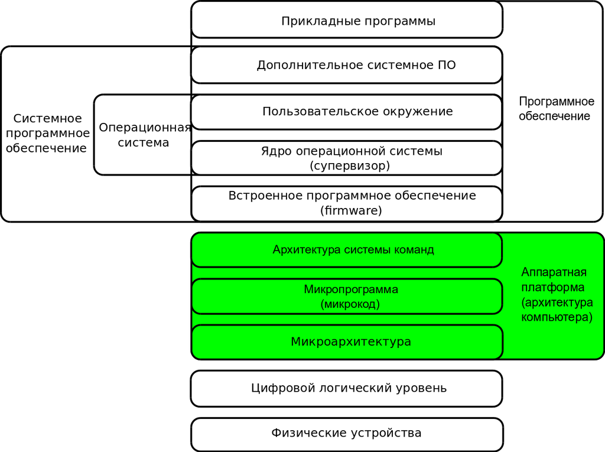

Архитектура ПК
Архитекту́ра компью́тера — это модель компьютерной системы, воплощённая в её компонентах, их взаимодействии между собой и окружением, включающая также принципы её проектирования и развития[1][2]. Аспекты реализации (например, технология, применяемая при реализации памяти) не являются частью архитектуры[3]

- Уровень 0
- Цифровой логический уровень, это аппаратное обеспечение машины, состоящий из вентилей.
- Уровень 1
- Микроархитектурный уровень, интерпретация (микропрограммы) или непосредственное выполнение. Электронные схемы исполняют машинно-зависимые программы. Совокупность регистров процессора формирует локальную память. См. также арифметико-логическое устройство, устройство управления. Его задача — интерпретация команд уровня 2 (уровня архитектуры команд). В настоящее время на уровне архитектуры команд обычно находятся простые команды, которые выполняются за один цикл (таковы, в частности, RISCмашины)
- Уровень 2
- Уровень архитектуры системы команд, трансляция (ассемблер)
- Уровень 3
- Уровень операционной системы, трансляция (ассемблер). Это гибридный уровень: одна часть команд интерпретируется операционной системой, а другая — микропрограммой. См. также виртуальная память, файлы
- Уровень 4
- Уровень языка ассемблера, трансляция (компилятор). Четвертый уровень и выше используется для написания прикладных программ, с первого по третий — системных программ. Программы в удобном для человека виде транслируются на язык уровней 1-3
- Уровень 5
- Язык высокого уровня. Программы на языках высокого уровня транслируются обычно на уровни 3 и 4